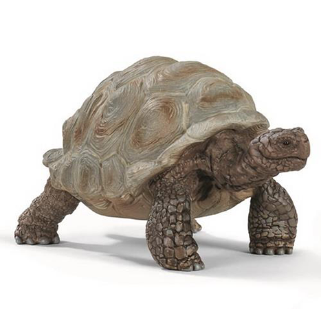
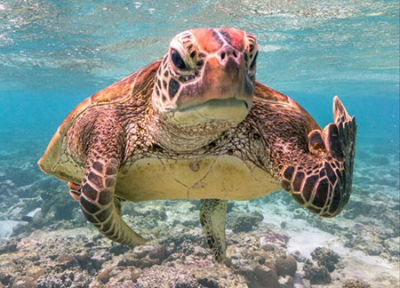

<!DOCTYPE html>
<html lang="da">

<head>
	<meta charset="utf-8">

	<title>Skildpadde/title>
	<meta name="author" content="Your Name">
	<meta name="description" content="Example description">
	<meta name="viewport" content="width=device-width, initial-scale=1.0">
	<link rel="stylesheet" href="css/style.css">

	<!-- favicon = ikon i faneblad / browser -->
	<link rel="icon" type="image/x-icon" href="images/jumpnu.png" />
</head>

<body{
  font-family: Arial, Helvetica, sans-serif;


	<!-- "Wrapperen" holder sammen på dit design, fx hvis det skal centreres eller lign. -->
	<div id="wrap">

		<!-- Emmet tip: nav>ul>li{Menu $}*3 -->
		<nav>
			<!-- Menuer laves som regel i form af uordnede lister.
					 Listerne kan styles så de går vandret eller lodret -->
			<ul>
				<li><a href="#"> Menu 1 </a></li>
				<li>Menu 2</li>
				<li>Menu 3</li>
			</ul>

		</nav>

		<header>
			<!-- site navn plus evt tagline og logo -->

			<!-- ofte reserveres h1 til site-navn -->
			<h1> Mit galleri</h1>
		</header>

		<!-- indhold -->
		<main>
			<!-- modul for en sektion -->
			<section id="aaa">
				<article>
					<h2> Skildpadder </h2>
					<p>
				Landskildpadde
				<h1></h1>

<figure>

<figcaption>Fig.1 .Fra google
				</article>
			</section>

	figure {
 heigh:450px;
width:300px;
overflow: auto;
}

			<h1>Havskildpadde</h1>

<figure>
  
  <figcaption>Fig.1 -fra Google.</figcaption>
</figure>

			<!-- modul: en ny sektion -->
			<section id="bbb">
				<article>
					<h2> h2 </h2>
					<p>
						Hej
					</p>

				</article>
			</section>
		</main>

		<!-- typisk kontaktinformationer -->
		<footer>
			En hel side om skildpadder
		</footer>

	</div><!-- /wrap -->
</body>

</html>
